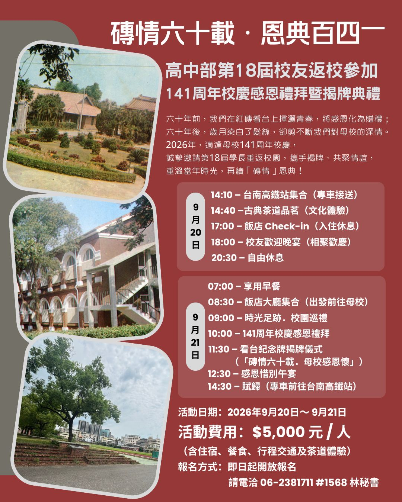

磚情六十載．恩典百四一
高中部第18屆校友返校參加141周年校慶感恩禮拜暨揭牌典禮
2026年9月20日（日）～ 9月21日（一）長榮中學校友會辦公室誠摯邀請第18屆校友返校參加141周年校慶感恩禮拜暨揭牌典禮，重溫當年時光，再續「磚情」恩典！
六十年前，我們在紅磚看台上揮灑青春，將感恩化為贈禮；
六十年後，歲月染白了髮絲，卻剪不斷我們對母校的深情。
2026年，適逢母校141周年校慶，
誠摯邀請第18屆學長重返校園，攜手揭牌、共聚情誼，
重溫當年時光，再續「磚情」恩典！
🗓️ 行程簡表
Day 1：2026年9月20日（日）校友相聚
14:10 ｜ 台南高鐵站集合（專車接送）
14:40 ｜ 古典茶道品茗（文化體驗）
17:00 ｜ 飯店 Check-in（入住休息）
18:00 ｜ 校友歡迎晚宴（相聚歡慶）
20:30 ｜ 自由休息
Day 2：2026年9月21日（一）母校巡禮與揭牌
07:00 ｜ 享用早餐
08:30 ｜ 飯店大廳集合（出發前往母校）
09:00 ｜ 時光足跡．校園巡禮
10:00 ｜ 141周年校慶感恩禮拜
11:30 ｜ 看台紀念牌揭牌儀式（「磚情六十載．母校感恩懷」）
12:30 ｜ 感恩惜別午宴
14:30 ｜ 賦歸（專車前往台南高鐵站）
📝 活動與報名資訊
活動日期： 2026年9月20日（日）～ 9月21日（一）
活動費用： $5,000 元 / 人（包含住宿、餐食、行程交通及茶道體驗）
報名方式： 即日起開放報名，請電洽 06-2381711 #1568 林秘書 辦理報名與繳費登記。
📄 活動宣傳海報
